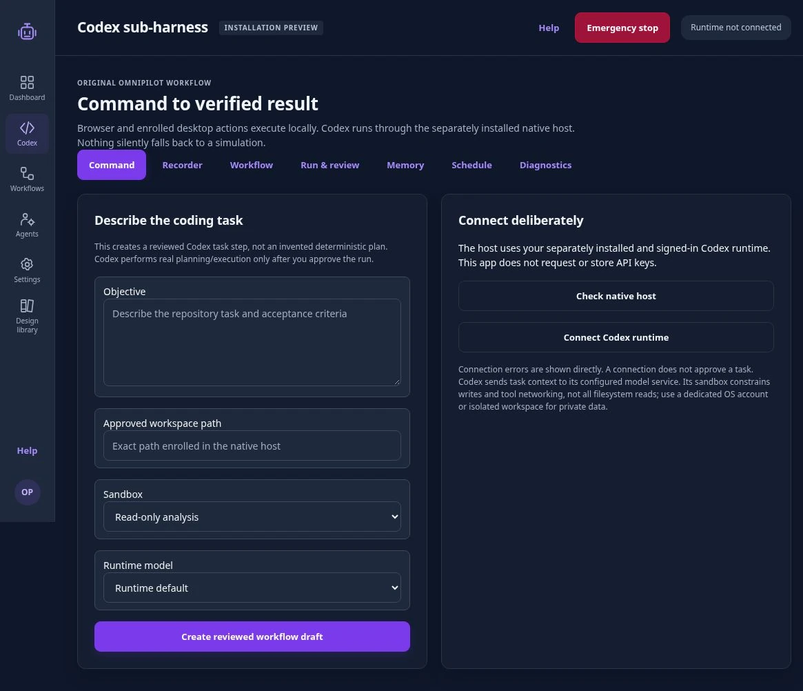
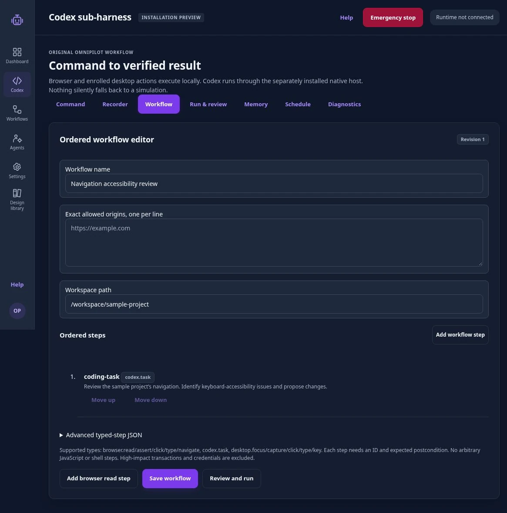
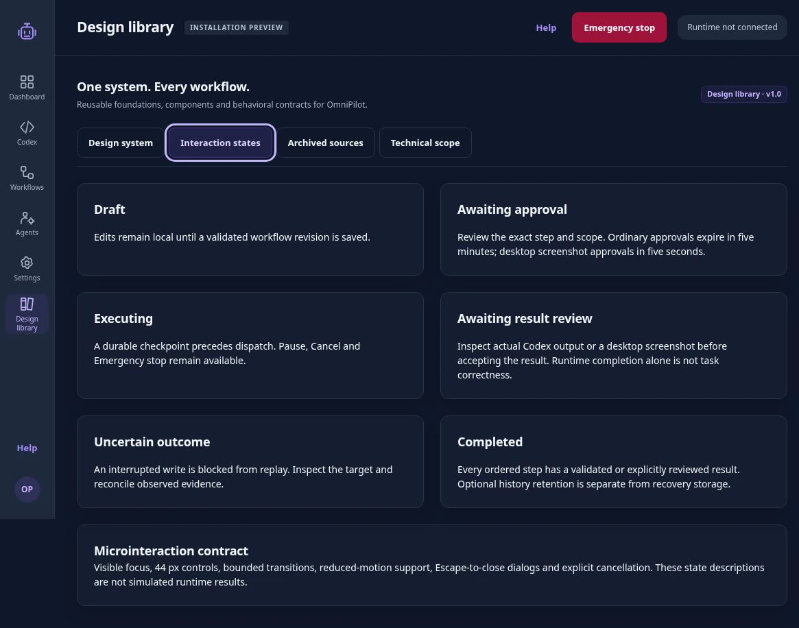
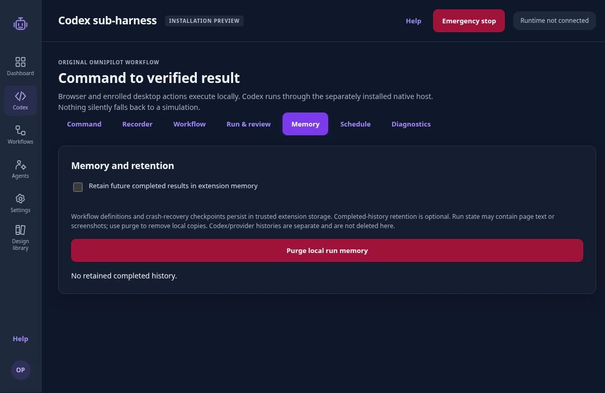
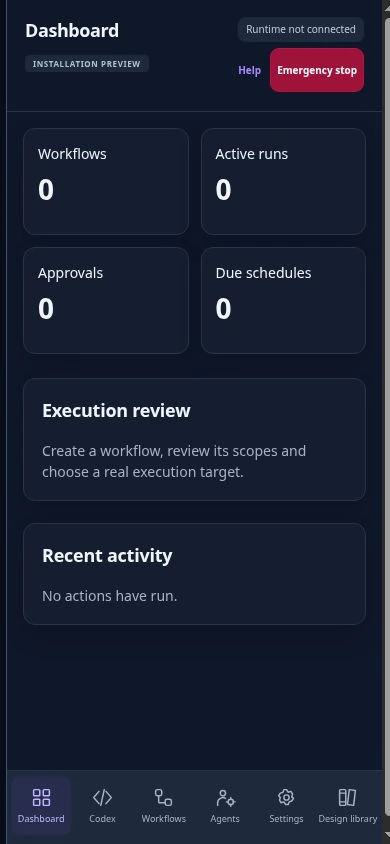
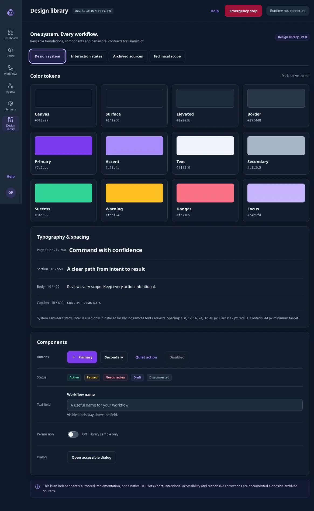

A connection is not consent.
Browser origins, workspace access and native runtime connection are separate concerns. Consequential steps require one-time approval tied to the workflow revision and action.
03 / OmniPilot / Independent project
From a natural-language request to an ordered workflow, with clear scope, one-time approvals and a result someone can inspect.

A request like “review this project” hides several decisions: what the assistant can access, which steps it will take, when it should stop and what counts as done.
My browser-assistant research explored task progress, expected-state checks, memory and error recovery. OmniPilot turns those concerns into a visible sequence. The interface keeps the task, its scope and the next review point together.
This independent project brings together my research, specifications, interface iterations and implementation tests.
I wrote the source research and product documents. They explored different browser architectures and model choices, so they could not serve as one unquestioned implementation spec. The current build makes its own choices explicit and keeps earlier design references separate.
The original pseudocode tracked completion and compared expected results, but left questions around cancellation, recovery and replay. Those gaps became concrete interaction requirements: show an uncertain outcome, stop an interrupted write from replaying, and ask for evidence before continuing.
01 / The workflow
Capture intent and context.
Check order, target and scope.
Permit this step once.
Compare evidence with intent.
Choose what happens next.
From first intent to the next review.
The Codex sub-harness is the workspace for this sequence. A coding request becomes a typed task with an explicit workspace and sandbox choice. The ordered editor exposes the task before a run. Connecting the runtime is a separate step from approving work.
Browser recordings offer another entry point. Captured clicks and targets can become a workflow, while typed values are omitted and supplied during review. That keeps capture from quietly collecting sensitive input.

02 / Control & memory
Browser origins, workspace access and native runtime connection are separate concerns. Consequential steps require one-time approval tied to the workflow revision and action.
A durable checkpoint precedes dispatch. If a write may have happened before an interruption, the workflow blocks replay until the observed result is reconciled.
Codex completion is not enough to prove the task was done correctly. The interface asks someone to inspect the actual result. Schedules create work due for review, not unattended approval.

My research distinguished page context, task state, session memory and an action log. The current implementation separates recovery storage from optional completed history. That is an important trade-off: recovering safely can require keeping state before a task has finished.
The memory view makes retention opt-in and exposes local purge. It also says what purge cannot do: remove copies held by Codex or the model provider. The sandbox limits writes and tool networking, not every filesystem read, so real work requires an appropriately isolated environment.

03 / Design system
The dark canvas gives the workflow a steady frame. Violet identifies the primary action and focus; warning and danger styles distinguish review from destructive controls.
Current UI checks cover representative interactions and measured CSS widths.


04 / Evidence & limits
The editor gained visual step creation and reordering, and unsaved fields now survive stage changes. Test-driven repairs also addressed cancellation races, stale approvals and interrupted actions that could otherwise be dispatched twice. The design-library controls and archive paths were repaired and retested.
The outcome is an inspectable development build and a clearer contract between intent, permission, execution and evidence. I am not reporting adoption, time saved or task-success rates without a representative study.
Build 2.1.0 · Evidence recorded 30 October 2026. Screens show the independently authored application in a managed Linux browser preview. They contain no real customer data and do not depict production execution.
I authored the underlying research and specifications and led the product and UX direction. AI-assisted implementation made the interactions testable, with code review and browser testing used to check the result.
The next validation step is an isolated, consented installation on each intended platform, followed by representative task and usability testing. The same review boundaries need to hold outside the preview.